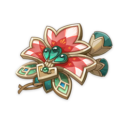

Genshin Impact · Versión 7.2
Análisis del Rol y Escalado
Zhongli es un personaje de elemento Geo originario de Liyue que utiliza Lanza y se posiciona en el tier T1.5 (A) Support dentro del rol de Escudo Indestructible & Reductor de Resistencias Universal (-20% All RES). Su rendimiento en combate gira en torno a este eje principal: Escalado 100% Vida Máxima (HP%) para el escudo • Daño de Q escala con HP y ATQ.
Para maximizar su aporte en el equipo, la configuración prioritaria combina Borla Negra con el conjunto de artefactos Tenacidad de la Geoarmada (4 piezas), respetando la jerarquía de estadísticas 1. Vida% y Vida Plana > 2. Recarga de Energía% (si se usa la Definitiva) > 3. Prob. Crítica (para Favonius) y subiendo sus habilidades en orden: Habilidad Elemental (E) >>> Definitiva (Q) >>> Ataques Normales (No subir).
Mejores Armas
Opciones recomendadas ordenadas por rendimiento según el meta actual y compatibilidad con sus rotaciones:
-
 Borla Negra ★★★Opción por rolArma 3★ que aporta +46.9% Vida Máxima, ideal para superar los 50,000 HP.
Borla Negra ★★★Opción por rolArma 3★ que aporta +46.9% Vida Máxima, ideal para superar los 50,000 HP. -
 Lanza de Favonius ★★★★Opción por rolGenera partículas neutras para el equipo manteniendo un escudo sólido.
Lanza de Favonius ★★★★Opción por rolGenera partículas neutras para el equipo manteniendo un escudo sólido. -
 Báculo de Homa ★★★★★Opción por rol+Vida Máx, Daño Crítico masivo y excelente daño en la Definitiva.
Báculo de Homa ★★★★★Opción por rol+Vida Máx, Daño Crítico masivo y excelente daño en la Definitiva. -
 Cruz de Kitain ★★★★Opción por rolRegenera energía pasivamente.
Cruz de Kitain ★★★★Opción por rolRegenera energía pasivamente.
Mejores Sets de Artefactos
Combinaciones de 4 piezas o mezclas de 2 piezas para maximizar su contribución:
-
 Tenacidad de la Geoarmada (4 piezas) BiS Soporte
Tenacidad de la Geoarmada (4 piezas) BiS Soporte+20% ATQ para todo el equipo y +30% Protección de Escudo con el pilar E.
-
 Instructor (4 piezas) Soporte Reacciones
Instructor (4 piezas) Soporte Reacciones+120 Maestría Elemental para equipos de Hu Tao o Navia al cristalizar.
-

2p Tenacidad + 2p Vourukasha Escudo Dios (55k+ HP)+40% Vida Máxima total para un escudo imposible de romper.
Estadísticas Principales y Secundarias
Atributos prioritarios en artefactos para un balance óptimo de daño o soporte:
| Pieza | Estadística Principal |
|---|---|
| Reloj (Arenas) | Vida% |
| Cáliz | Vida% (o Bono Geo en Híbrido) |
| Corona | Vida% (o Prob. CR con Favonius) |
Prioridad de Subestadísticas
- 1. Vida% y Vida Plana
- 2. Recarga de Energía% (si se usa la Definitiva)
- 3. Prob. Crítica (para Favonius)
Prioridad de Talentos
Habilidad Elemental (E) >>> Definitiva (Q) >>> Ataques Normales (No subir)
Objetivos de Estadísticas (Nivel 90)
Las metas numéricas exactas de Zhongli varían según el arma equipada, los refinamientos y la generación de partículas de su equipo.
Prioriza cumplir primero la Recarga de Energía necesaria para mantener la rotación fluida de su Habilidad Definitiva antes de buscar subestadísticas ofensivas adicionales.
Con piezas principales de Vida%, Vida% (o Bono Geo en Híbrido) y Vida% (o Prob. CR con Favonius), enfoca tu farmeo de artefactos en: 1. Vida% y Vida Plana > 2. Recarga de Energía% (si se usa la Definitiva) > 3. Prob. Crítica (para Favonius) (Escalado 100% Vida Máxima (HP%) para el escudo • Daño de Q escala con HP y ATQ).
Talentos de Combate y Materiales (Nivel 1 al 10)
Habilidades principales de Zhongli y desglose exacto de libros, materiales y Mora para mejorar sus talentos:


Composiciones de Equipo Recomendadas
Alineaciones con mayor sinergia elemental y amplificación de daño en el Abismo y Teatro Fantasía:
Tighnari Spread
Tighnari • Yae Miko • Nahida • Zhongli
Materiales de Ascensión (Nivel 1 al 90)
Recursos totales requeridos para desbloquear las 6 fases de ascensión de Zhongli. Coste total de Mora en ascensiones: 420.000 Mora.


Sinergias y Guías Relacionadas
Explora las fichas de armas, artefactos y materiales de los principales compañeros de equipo para Zhongli: